1中央に英文、下に本番のチーム写真参考：Instrument Careers「Be yourself. Work wherever.」
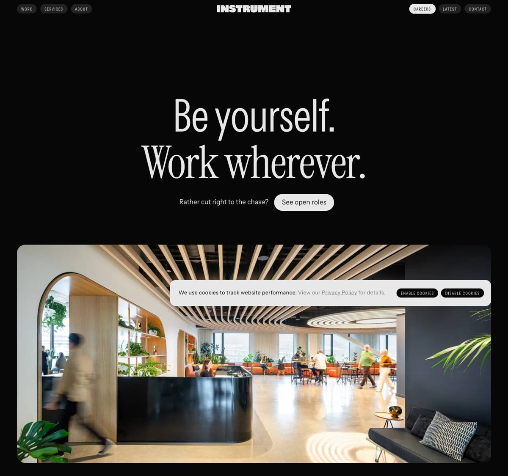
Instrument Careers中央に大きなセリフ体の英文、下に職場の写真。
→ 地は生成りに。英文を明朝で中央に、下に本番の『足湯を囲んで笑う4人』を色そのままで。
aiming to build the most fun-loving team

2白地に英文だけを大きく左寄せ参考：AREA 17 About「Culture」
 AREA 17 About
AREA 17 About白地に小さなラベルと大きな文だけ。
→ 写真を置かず、英文だけで始める。ラベルの頭に水色の小さな点。
Recruit
aiming to build the most fun-loving team
3題の下に本番の動画を、色そのまま角丸の枠で参考：14islands「Team & Culture」
 14islands Careers
14islands Careers明るい地に題、その下に写真の帯。
→ 本番の動画（海・夕暮れ・棚田）を暗くせずにそのまま。動きの少ない人向けの設定では止まる。
Recruit
aiming to build the most fun-loving team
1中央に明朝で、本番の改行のまま参考：Collins「Rewrite your worth.」
 Collins
Collins明るい地の中央に、セリフ体の文だけ。
→ 本番の改行を活かして手紙のように中央に。スマホは改行を外して左寄せ。
私たちは
大手からスタートアップまで、
事業会社様の事業企画・
マーケティング業務の受託を行う他、
語学堪能なメンバー数名を軸に
インドネシア拠点を開拓し、
オフショアでの受託開発も行っています。
既存のマーケティング業務の
クライアント様からのご要望もあり、
新たに動画広告・LP制作ツール
「HookHack」をリリースしたため、
主にツールの展開とデリバリー領域において、
力を貸してくださる方を募集しています。
事業展開として、
国内市場において動画広告を通じた売上拡大の再現性を
チーム内で蓄積した上で、エンジニアチームの拠点があり、
人口3億人・平均年齢20代のインドネシアの
BtoC市場への進出を目指していきます。
2白地に、左に小さなラベル・右に本文参考：Pentagram About
 Pentagram About
Pentagram About左に題、右に本文の2列。
→ 本文を少し大きめに、行の長さを抑えて読みやすく。
About us
私たちは大手からスタートアップまで、事業会社様の事業企画・マーケティング業務の受託を行う他、語学堪能なメンバー数名を軸にインドネシア拠点を開拓し、オフショアでの受託開発も行っています。
既存のマーケティング業務のクライアント様からのご要望もあり、新たに動画広告・LP制作ツール「HookHack」をリリースしたため、
主にツールの展開とデリバリー領域において、力を貸してくださる方を募集しています。
事業展開として、国内市場において動画広告を通じた売上拡大の再現性をチーム内で蓄積した上で、エンジニアチームの拠点があり、人口3億人・平均年齢20代のインドネシアのBtoC市場への進出を目指していきます。
3本番のチーム写真を左に留め、右に本文参考：Instrument About「How we work」
 Instrument About
Instrument About写真と文を左右に。
→ 本番の『ソファでくつろぐメンバー』を色そのままで。

私たちは大手からスタートアップまで、事業会社様の事業企画・マーケティング業務の受託を行う他、語学堪能なメンバー数名を軸にインドネシア拠点を開拓し、オフショアでの受託開発も行っています。
既存のマーケティング業務のクライアント様からのご要望もあり、新たに動画広告・LP制作ツール「HookHack」をリリースしたため、
主にツールの展開とデリバリー領域において、力を貸してくださる方を募集しています。
事業展開として、国内市場において動画広告を通じた売上拡大の再現性をチーム内で蓄積した上で、エンジニアチームの拠点があり、人口3億人・平均年齢20代のインドネシアのBtoC市場への進出を目指していきます。
11枚ずつ、ほぼ全幅で参考：Locomotive Careers の全幅の写真
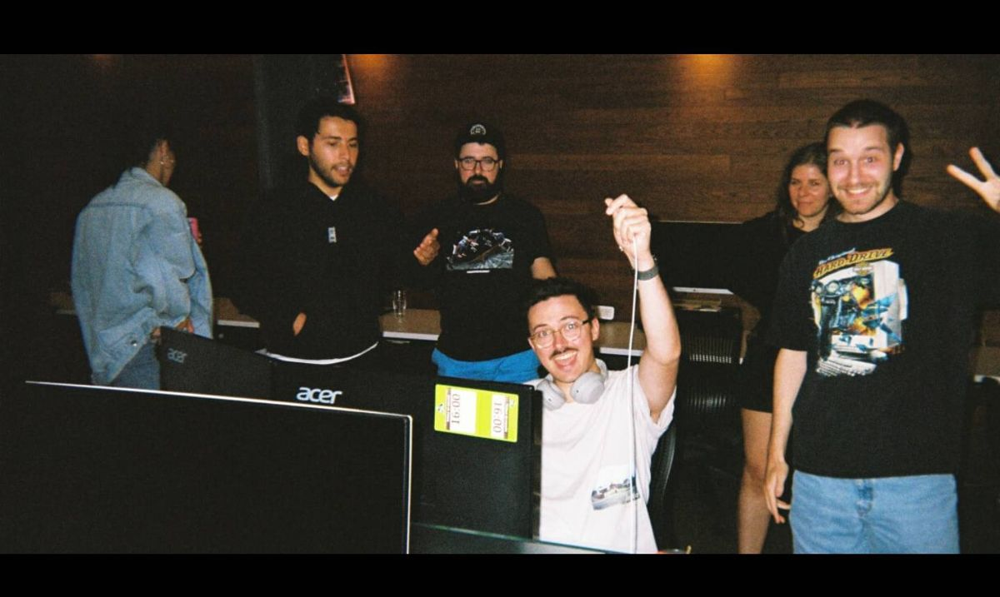
Locomotive Careers文と文の間に、写真を1枚大きく。
→ 2枚とも左右に少し余白を残した全幅で。
2白地に2枚を並べる（大と小）参考：Instrument Careers の写真の並び
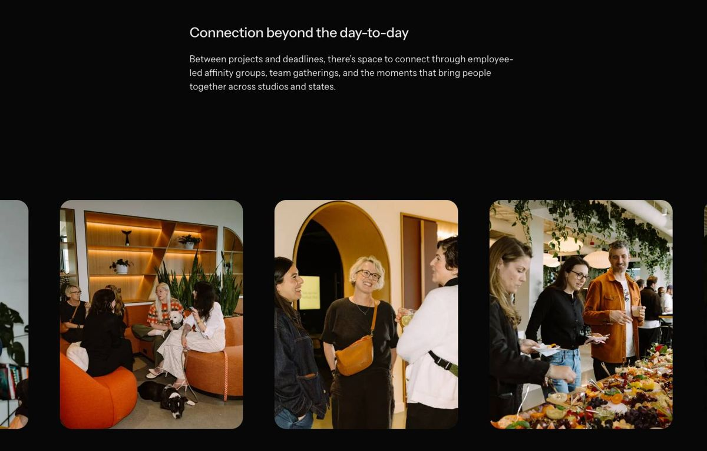
Instrument Careers大きさの違う写真を横に並べる。
→ 横長と縦長を1行に。
3大きい1枚と小さい1枚を段違いに参考：AREA 17 About の写真と文の段違い
 AREA 17 About
AREA 17 About写真をずらして置き、余白を見せる。
→ 動きはなし、配置だけで変化をつける。
1本番の木の写真を左に留め、右に文参考：Instrument About「How we work」
Instrument About 写真と文を左右に。
→ 本番の木の写真を色そのまま（緑のまま）。
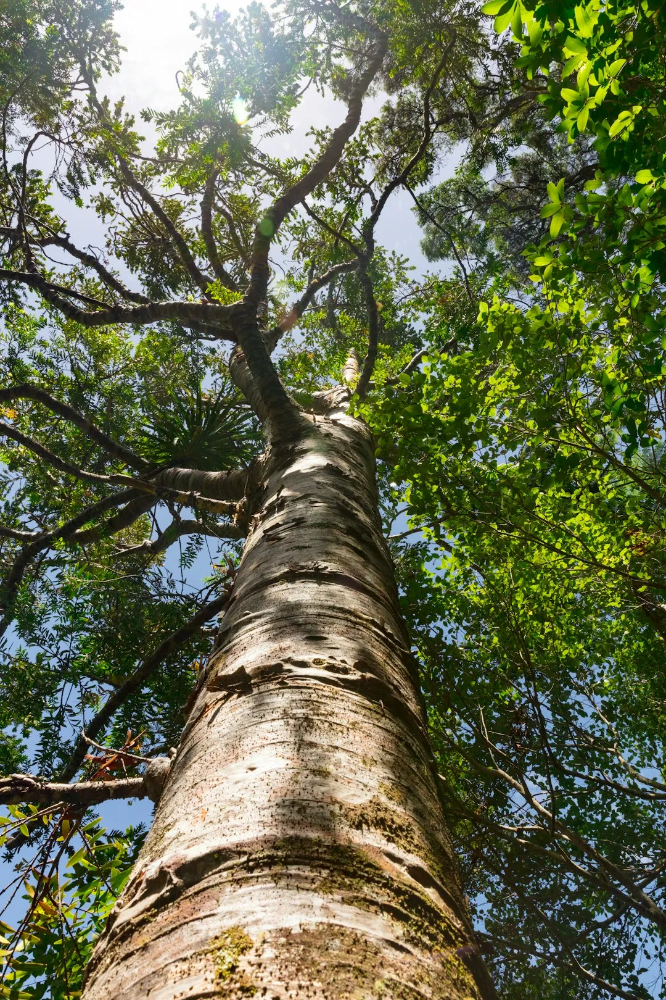
CORE VALUE
大切にする価値観
会社の価値観の根幹には、代表の橋本が大学時代に友人が起こした会社を見ながら感じていた「仲間同士で楽しみながら、同じ目的に向かって働きたい」という思いがあります。
労働の対価とは金銭だけでなく、誰かの役に立つことで受け取る「ありがとう」といった言葉や、そこに向かって仲間とともに価値を作る過程での高揚感があると考えています。
会社のミッションとして掲げている「パイの最大化」も、パイの定義を金銭とすると目の前のパイを奪い合うゼロサムの世界観になりますが、感謝や高揚感、そして笑顔が加わることでプラスサムになり、このプラスサムの世界観が広がることを目指しています。
2白地の中央に明朝。「プラスサム」に細い水色の下線参考：Collins「Rewrite your worth.」
Collins 明るい地の中央に、セリフ体の文だけ。
→ 写真なし。強調は「プラスサム」の下線1か所だけ。
CORE VALUE
大切にする価値観
会社の価値観の根幹には、代表の橋本が大学時代に友人が起こした会社を見ながら感じていた「仲間同士で楽しみながら、同じ目的に向かって働きたい」という思いがあります。
労働の対価とは金銭だけでなく、誰かの役に立つことで受け取る「ありがとう」といった言葉や、そこに向かって仲間とともに価値を作る過程での高揚感があると考えています。
会社のミッションとして掲げている「パイの最大化」も、パイの定義を金銭とすると目の前のパイを奪い合うゼロサムの世界観になりますが、感謝や高揚感、そして笑顔が加わることでプラスサムになり、このプラスサムの世界観が広がることを目指しています。
3左に見出し、右に本文。最初の段落だけ少し大きく参考：Pentagram About
Pentagram About 左に題、右に本文の2列。
→ 最初の段落（会社の価値観の根っこ）だけ一段大きく。
会社の価値観の根幹には、代表の橋本が大学時代に友人が起こした会社を見ながら感じていた「仲間同士で楽しみながら、同じ目的に向かって働きたい」という思いがあります。
労働の対価とは金銭だけでなく、誰かの役に立つことで受け取る「ありがとう」といった言葉や、そこに向かって仲間とともに価値を作る過程での高揚感があると考えています。
会社のミッションとして掲げている「パイの最大化」も、パイの定義を金銭とすると目の前のパイを奪い合うゼロサムの世界観になりますが、感謝や高揚感、そして笑顔が加わることでプラスサムになり、このプラスサムの世界観が広がることを目指しています。
1英語・本番の写真・文の3列を5行参考：basement Careers「Our Values」（行の組み方）
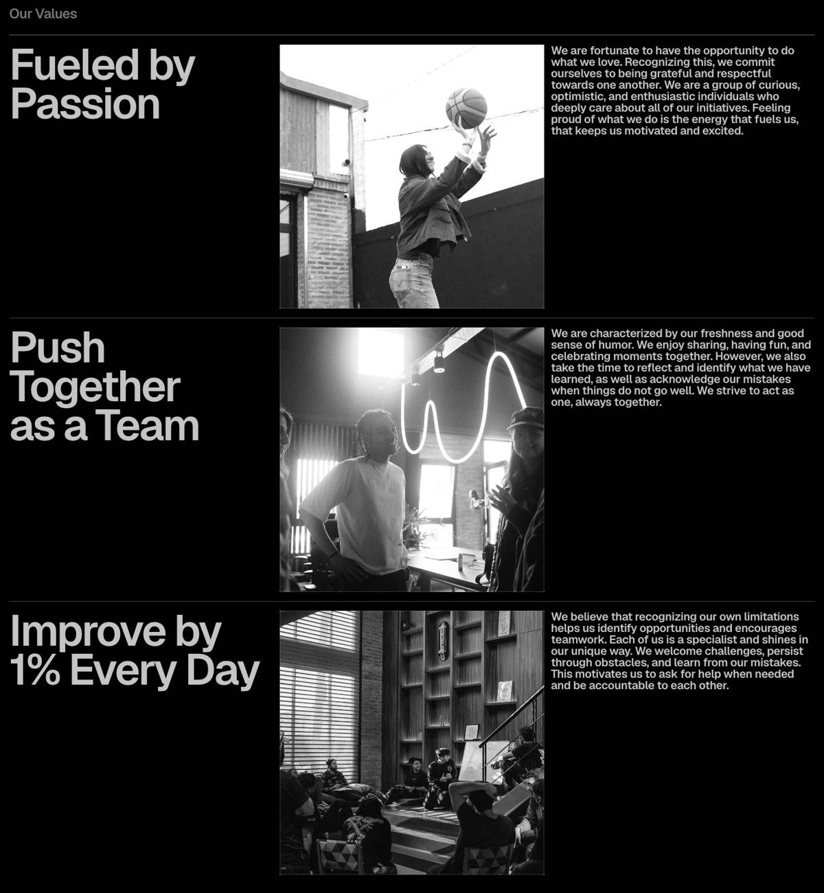
basement.studio Careers大きな英語、写真、文を1行に並べて積む。
→ 地は生成りに、写真は本番のギャラリーから意味の合う5枚を色そのままで。
1Fun

世界一楽しく働く会社を目指す
2Free

各自の責任感の下、場所や時間に捉われず自由に裁量を持って働く
3Flat

年齢や役職などの上下関係なく接する
4Open

チーム内では本音で向き合い、人格は否定しない
5Optimization

全体最適視点で判断する
2白地の開閉リスト。最初の1つだけ開けておく参考：Instrument Careers「Meet our affinity groups」
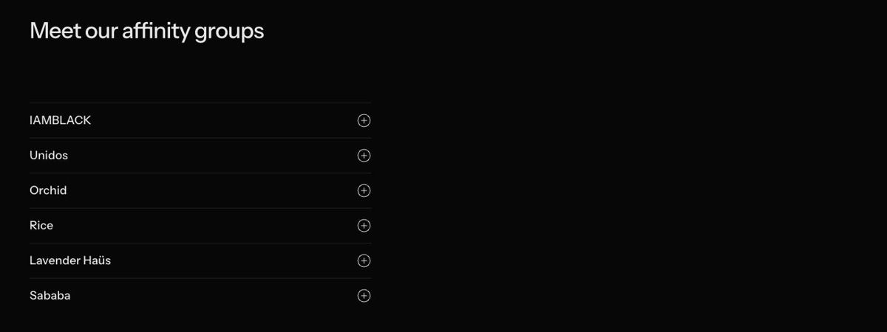
Instrument Careers細い行のリストで、押すと中身が開く。
→ 開いた行の丸だけ水色。写真なし。
各自の責任感の下、場所や時間に捉われず自由に裁量を持って働く
3中央に1つずつ、番号・英語・日本語参考：Collins「Rewrite your worth.」
Collins 中央に短い文だけ、余白を広く。
→ 5つを中央に縦に積む。写真なし。
+VALUE
行動指針
- 1
Fun
世界一楽しく働く会社を目指す
- 2
Free
各自の責任感の下、場所や時間に捉われず自由に裁量を持って働く
- 3
Flat
年齢や役職などの上下関係なく接する
- 4
Open
チーム内では本音で向き合い、人格は否定しない
- 5
Optimization
全体最適視点で判断する
1同じ高さで横に送る帯参考：Instrument Careers「Connection beyond the day-to-day」
Instrument Careers
縦長の写真を同じ高さで横に並べる。
→ 9枚を指で横に送る。
2白地に正方形の3×3参考：Pentagram About の格子
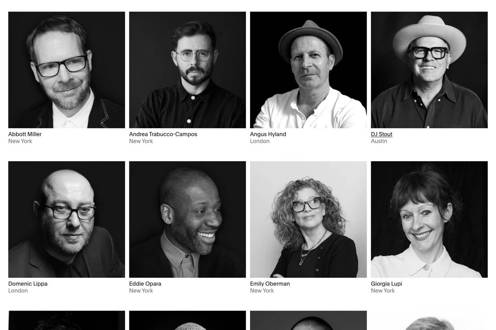
Pentagram About同じ寸法の写真を格子に。
→ 9枚を同じ正方形に切りそろえる。
3元の縦横比のまま3段に積む参考：AREA 17 About の写真の並び
AREA 17 About 写真を切らずに、元の比率のまま並べる。
→ 縦長の写真が多いので、切らずに石垣のように積む。
1本番のプールの写真を左、右に文参考：Instrument Careers「How we hire, pay, and grow」
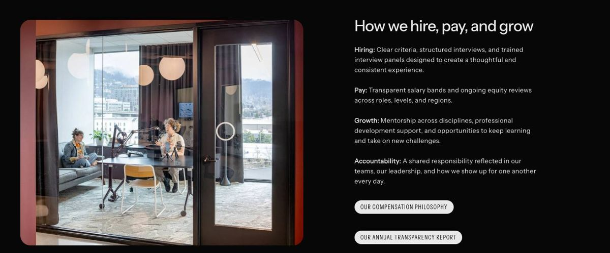
Instrument Careers角丸の写真を左、見出しと文を右に。
→ 地は生成り、写真は色そのまま。

楽しく働くことの意義
The significance of working joyfully
今後、外部環境の変化がより激しくなっていく中で生き残るためには、能力や成果を高め続ける必要があり、その土台には、日々の地道な取り組みの積み重ねがあると考えています。
そのため、楽しく働くことは、各メンバーの幸福度に直結するだけでなく、日々の生産性を高めることによる会社としての生存戦略、そして、個人・会社が成長して社会に還元していくことにまで繋がっていきます。
「パイ（笑顔の総量）の最大化」（利他）を追求することと、個人の 幸福度（利己）も本質的には繋がっているのではないかと感じています。
2白地に縦書きの明朝（スマホは横書き）参考：Collins「Rewrite your worth.」
Collins 明るい地の中央に、セリフ体の文だけ。
→ PC は縦書きで手紙のように。写真なし。
楽しく働くことの意義
今後、外部環境の変化がより激しくなっていく中で生き残るためには、能力や成果を高め続ける必要があり、その土台には、日々の地道な取り組みの積み重ねがあると考えています。
そのため、楽しく働くことは、各メンバーの幸福度に直結するだけでなく、日々の生産性を高めることによる会社としての生存戦略、そして、個人・会社が成長して社会に還元していくことにまで繋がっていきます。
「パイ（笑顔の総量）の最大化」（利他）を追求することと、個人の 幸福度（利己）も本質的には繋がっているのではないかと感じています。
The significance of working joyfully
3英語の副題を小さなラベルに、左に見出し・右に本文参考：AREA 17 About「Culture」
AREA 17 About 小さなラベルと大きめの見出し、余白を広く。
→ 写真なし。いちばん素直な2列。
The significance of working joyfully
楽しく働くことの意義
今後、外部環境の変化がより激しくなっていく中で生き残るためには、能力や成果を高め続ける必要があり、その土台には、日々の地道な取り組みの積み重ねがあると考えています。
そのため、楽しく働くことは、各メンバーの幸福度に直結するだけでなく、日々の生産性を高めることによる会社としての生存戦略、そして、個人・会社が成長して社会に還元していくことにまで繋がっていきます。
「パイ（笑顔の総量）の最大化」（利他）を追求することと、個人の 幸福度（利己）も本質的には繋がっているのではないかと感じています。
1英語の見出しを大きく、3行を線で区切る参考：14islands Careers
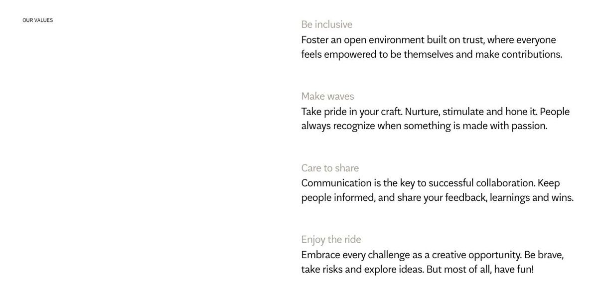
14islands Careers短い文を細い線で区切って縦に。
→ 番号を小さく添えて3行を大きめに。写真なし。
What we’re looking forチームに求める人間像
- 01
・会社のバリューを見て共感していただける方
- 02
・主体性を持って仕事に取り組みたい方
- 03
・常識にとらわれず、短期的にネガティブなことも長期的な視点でポジティブに変換する視座と柔軟性のある方
2白地の中央に3行だけ参考：Collins「Rewrite your worth.」
Collins 中央に短い文だけ。
→ 3行を線で区切って中央に。写真なし。
What we’re looking for
チームに求める人間像
・会社のバリューを見て共感していただける方
・主体性を持って仕事に取り組みたい方
・常識にとらわれず、短期的にネガティブなことも長期的な視点でポジティブに変換する視座と柔軟性のある方
3本番の写真（並んで歩く3人）を左、3行を右に参考：Instrument About「How we work」
Instrument About 写真と文を左右に。
→ 「一緒に歩く仲間」に合う本番の写真を色そのままで。
What we’re looking for
チームに求める人間像
・会社のバリューを見て共感していただける方
・主体性を持って仕事に取り組みたい方
・常識にとらわれず、短期的にネガティブなことも長期的な視点でポジティブに変換する視座と柔軟性のある方
1同じ寸法の顔写真を4列、紹介文まで全部参考：Pentagram About のパートナー一覧
Pentagram About
同じ光・同じ寸法の顔写真を格子に。
→ 7人を4列に、名前・役職・紹介文を下に。
MEMBER

Keiji Hashimoto
CEO
大手通信会社の営業、事業企画を経験後、Webコンサル会社へ転職。2018年にイラスト世界チャンピオンとともにDT合同会社を設立し、CMO着任。並行して事業会社・ベンダー双方での経験を生かし、様々な業種・規模の企業で事業企画・マーケティング・セールスまでのコンサルとして事業を推進。2024年にサムライスタイル株式会社を設立。

So Hayashi
PM/Art Director
東京生まれ、イギリス・シンガポール育ち。映像ディレクターの経験を持ち、企画・撮影・編集を一貫して対応。現在は弊社のオフショア開発事業と動画制作事業に加え、採用担当も務める。

Lura Naito
Human Resource
愛知生まれ、南米・東南アジア各国を放浪。
サムライスタイルでは人事全般・マーケティングを担当。ぶれない明るさが持ち味。

Kamizuru san
Project Manager
福岡在住。Web開発会社の経営と並行して、現役のフルスタックエンジニアとしても活動。小規模から中規模まで、事業フェーズに応じた柔軟なシステム設計を得意とする。技術と対話を通じて事業の課題解決に取り組んでいる。
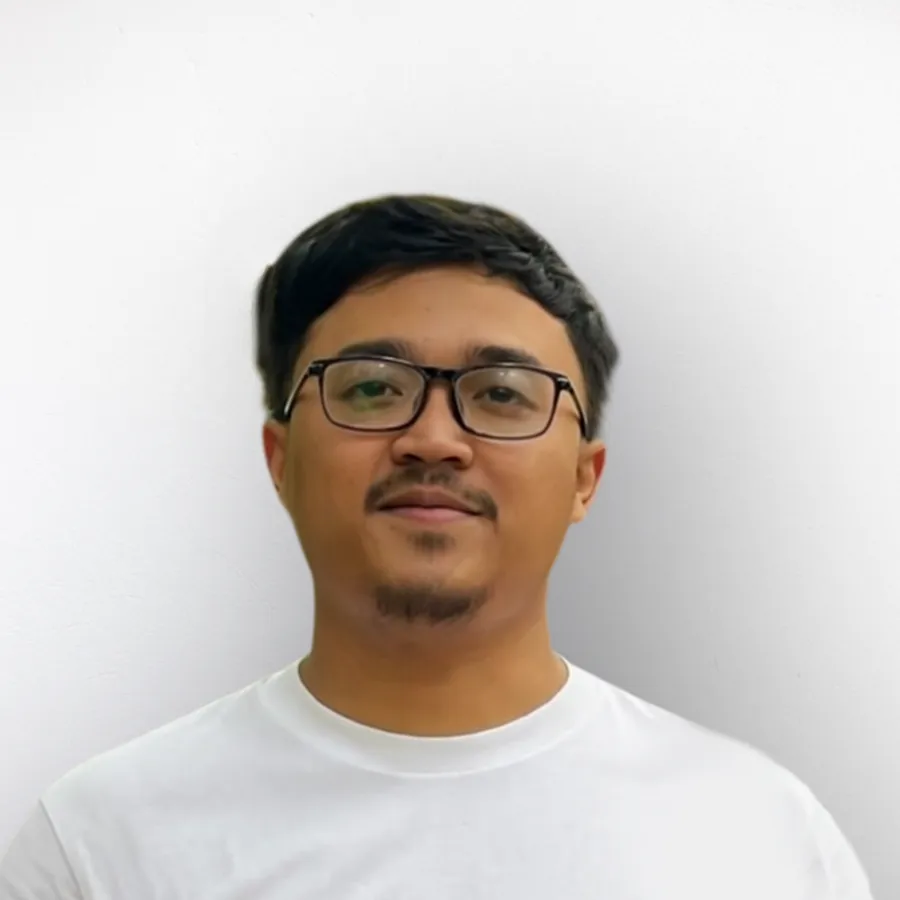
Satrio Buwono
Engineer Manager
インドネシア生まれ、グラズゴー大学卒業。11カ国を旅する。SaaSを専門に構築を行い、複数のITベンチャーを立ち上げ。オフショア開発事業のエンジニア統括を担う。
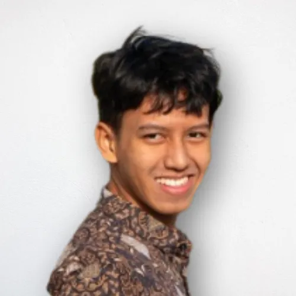
Ahmad
Engineer
インドネシア出身。サウジアラビアのハイル大学在学中。JavaScript開発環境に深く精通し、フルスタックWebアプリケーション開発において豊富な実績を持つ。
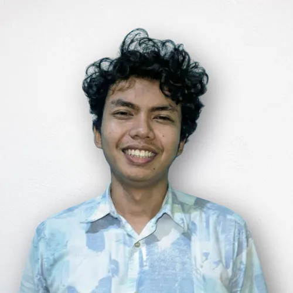
Jibran
Engineer
インドネシア出身。現役大学生。システムアーキテクチャおよびバックエンドエンジニアリングに精通。PythonとGoを主軸とし、複雑なシステムの最適化を実現する自動化ワークフローの構築において豊富な経験を持つ。
2白地に1人1行の名簿参考：AREA 17 About「Leadership」
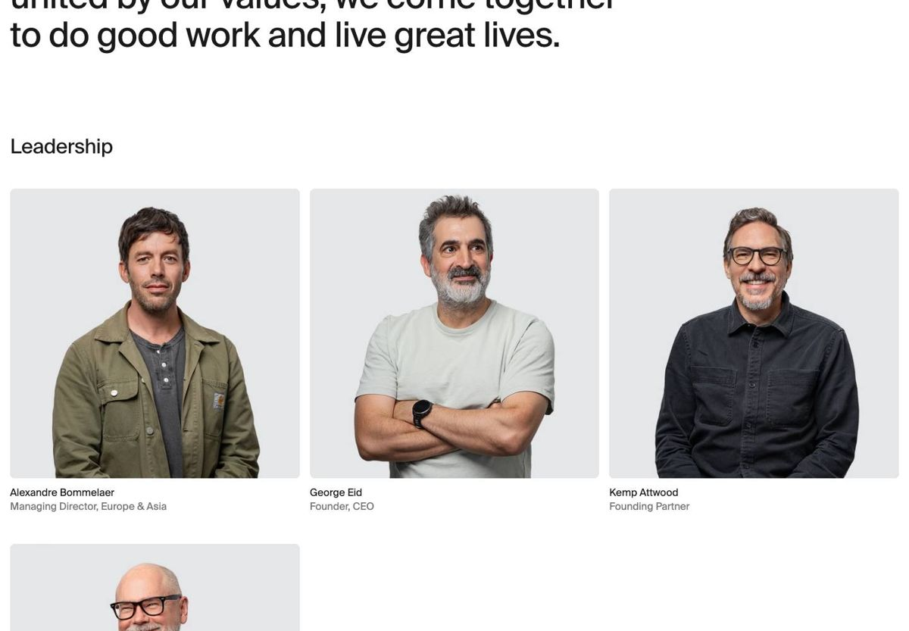
AREA 17 About白地に明るい顔写真と名前を整然と。
→ 7人なので1人1行。丸い顔写真・名前・役職・紹介文。
MEMBER
大手通信会社の営業、事業企画を経験後、Webコンサル会社へ転職。2018年にイラスト世界チャンピオンとともにDT合同会社を設立し、CMO着任。並行して事業会社・ベンダー双方での経験を生かし、様々な業種・規模の企業で事業企画・マーケティング・セールスまでのコンサルとして事業を推進。2024年にサムライスタイル株式会社を設立。
So Hayashi
PM/Art Director
東京生まれ、イギリス・シンガポール育ち。映像ディレクターの経験を持ち、企画・撮影・編集を一貫して対応。現在は弊社のオフショア開発事業と動画制作事業に加え、採用担当も務める。
愛知生まれ、南米・東南アジア各国を放浪。
サムライスタイルでは人事全般・マーケティングを担当。ぶれない明るさが持ち味。
Kamizuru san
Project Manager
福岡在住。Web開発会社の経営と並行して、現役のフルスタックエンジニアとしても活動。小規模から中規模まで、事業フェーズに応じた柔軟なシステム設計を得意とする。技術と対話を通じて事業の課題解決に取り組んでいる。
Satrio Buwono
Engineer Manager
インドネシア生まれ、グラズゴー大学卒業。11カ国を旅する。SaaSを専門に構築を行い、複数のITベンチャーを立ち上げ。オフショア開発事業のエンジニア統括を担う。
インドネシア出身。サウジアラビアのハイル大学在学中。JavaScript開発環境に深く精通し、フルスタックWebアプリケーション開発において豊富な実績を持つ。
インドネシア出身。現役大学生。システムアーキテクチャおよびバックエンドエンジニアリングに精通。PythonとGoを主軸とし、複雑なシステムの最適化を実現する自動化ワークフローの構築において豊富な経験を持つ。
3横に送るカード参考：Instrument Careers の横並び
Instrument Careers
人の写真を横に並べて送る。
→ 1人1枚の白いカードを横に送る。
MEMBER
Keiji Hashimoto
CEO
大手通信会社の営業、事業企画を経験後、Webコンサル会社へ転職。2018年にイラスト世界チャンピオンとともにDT合同会社を設立し、CMO着任。並行して事業会社・ベンダー双方での経験を生かし、様々な業種・規模の企業で事業企画・マーケティング・セールスまでのコンサルとして事業を推進。2024年にサムライスタイル株式会社を設立。
So Hayashi
PM/Art Director
東京生まれ、イギリス・シンガポール育ち。映像ディレクターの経験を持ち、企画・撮影・編集を一貫して対応。現在は弊社のオフショア開発事業と動画制作事業に加え、採用担当も務める。
Lura Naito
Human Resource
愛知生まれ、南米・東南アジア各国を放浪。
サムライスタイルでは人事全般・マーケティングを担当。ぶれない明るさが持ち味。
Kamizuru san
Project Manager
福岡在住。Web開発会社の経営と並行して、現役のフルスタックエンジニアとしても活動。小規模から中規模まで、事業フェーズに応じた柔軟なシステム設計を得意とする。技術と対話を通じて事業の課題解決に取り組んでいる。
Satrio Buwono
Engineer Manager
インドネシア生まれ、グラズゴー大学卒業。11カ国を旅する。SaaSを専門に構築を行い、複数のITベンチャーを立ち上げ。オフショア開発事業のエンジニア統括を担う。
Ahmad
Engineer
インドネシア出身。サウジアラビアのハイル大学在学中。JavaScript開発環境に深く精通し、フルスタックWebアプリケーション開発において豊富な実績を持つ。
Jibran
Engineer
インドネシア出身。現役大学生。システムアーキテクチャおよびバックエンドエンジニアリングに精通。PythonとGoを主軸とし、複雑なシステムの最適化を実現する自動化ワークフローの構築において豊富な経験を持つ。
1中央に1職種を、上下の線で囲む参考：Locomotive Careers「Positions」
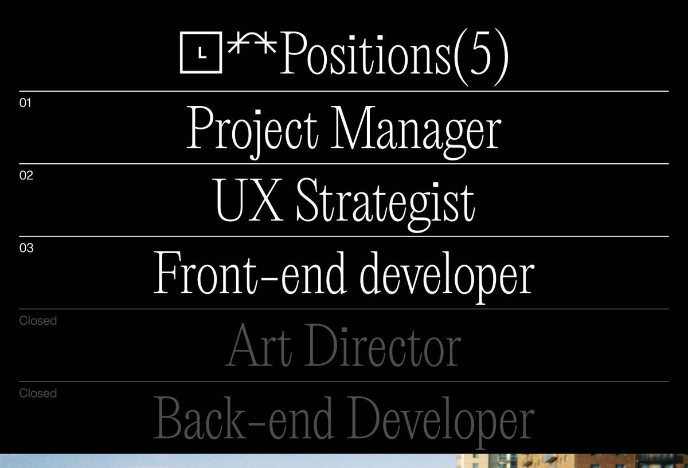
Locomotive Careers中央に職種名を大きな行で。
→ 地は生成りに。1職種なので中央に1つ、Apply ボタン。
2白地に絞り込みの丸ボタン＋求人の行参考：Instrument Careers「Find Your Next Job」
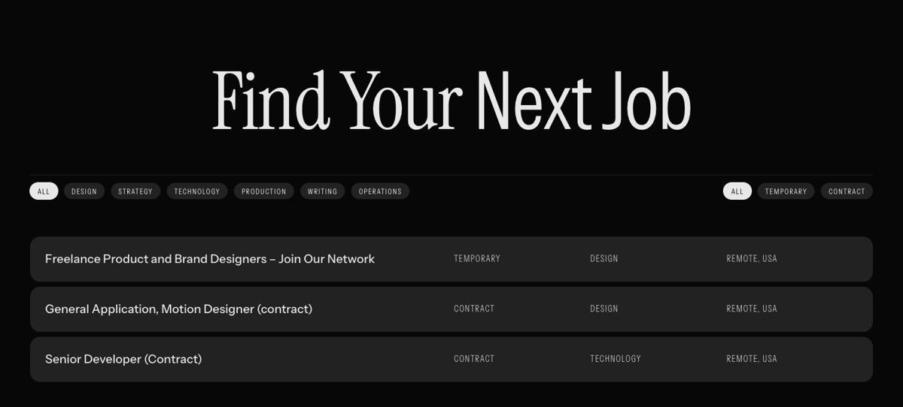
Instrument Careers絞り込みの丸いボタンと、角丸の求人の行。
→ 英語のボタンと1行だけ。
3左に JOB TYPE、右に1行と丸い矢印参考：Pentagram About（左に題・右に本文）
Pentagram About 左に題、右に本文の2列。
→ 右に職種の1行。乗せると矢印の丸が水色に。